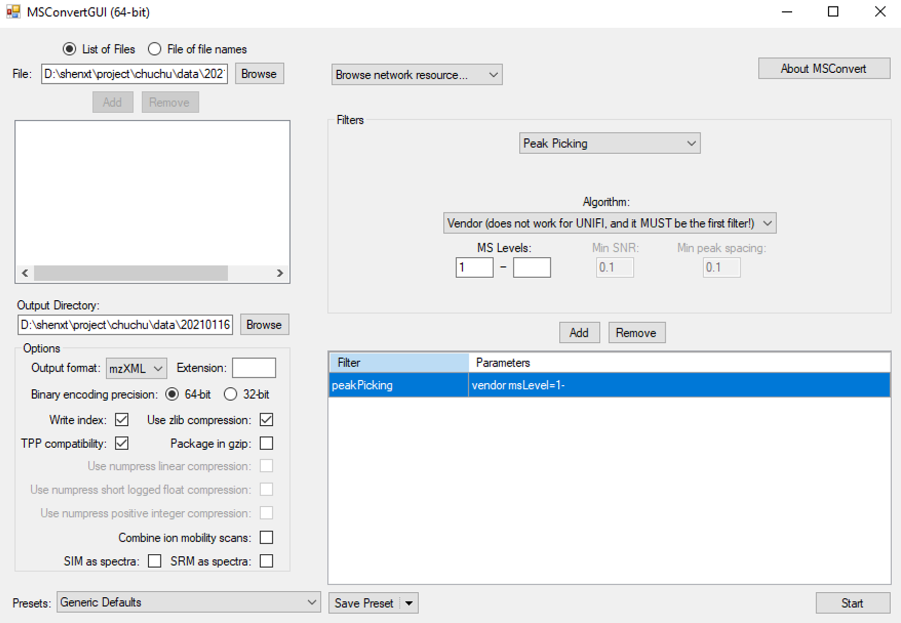
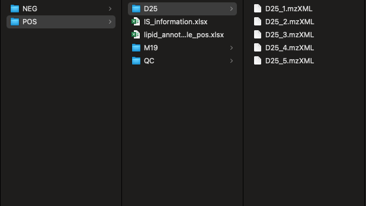
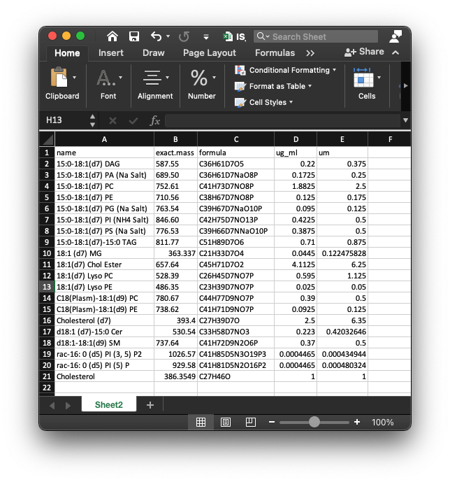
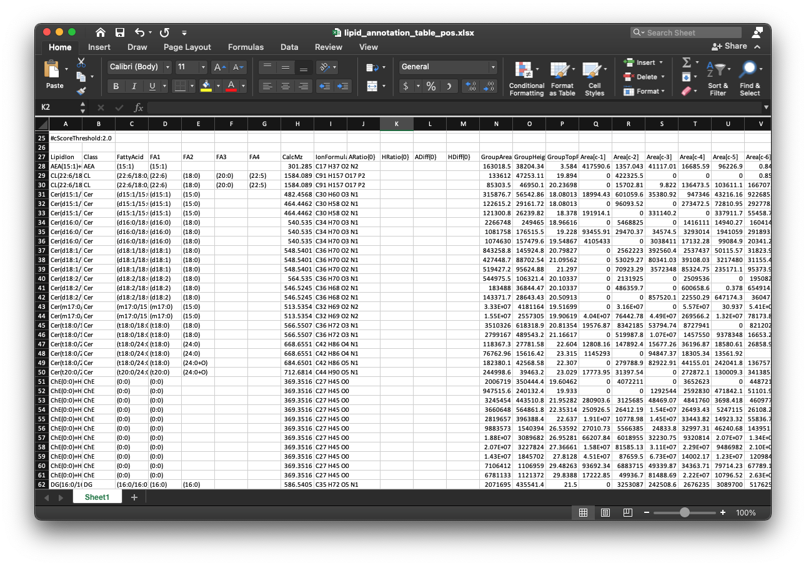
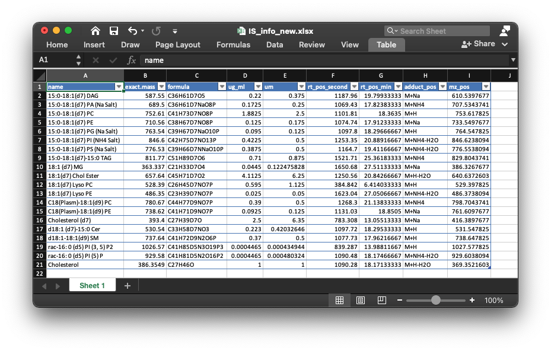

vignettes/absolute_quantification.Rmd
absolute_quantification.RmdThe raw lipidomics data should be transferred to mzXML format files using ProteoWizard software. The parameter setting should be set as below figure shows:

Then create a folder, and create “POS” and “NEG” folders in it, then put all the mzMXL data into the folders according to groups like the below figure shows:

To do absolute quantification, we need to provide the information of internal standard in the samples. The data should be “xlsx” format, and like the below figures shows:
 The first column is “name” (name of internal standards), the second column is “exact.mass” (exact mass of internal standards), the third column is “formula”, the fourth column is “ug_ml” and the fifth column is “um”.
And then put the internal standard information in “POS” and “NEG” folder respectively.
The lipid identification table can be from any other software, for example, here we use the lipidSearch software from Thermo, and then put the lipid identification table (xlsx format) for positive and negative mode in “POS” and “NEG” folder respectively.
The lipid identification table from lipidSearch is like the below figure shows:

get_lipid_absolute_quantification()
Then we can run get_lipid_absolute_quantification() function to get the absolute quantification table of lipids.
get_lipid_absolute_quantification(
path = path,
is_info_name_pos = is_info_name_pos,
is_info_name_neg = is_info_name_neg,
use_manual_is_info = use_manual_is_info,
lipid_annotation_table_pos = lipid_annotation_table_pos,
lipid_annotation_table_neg = lipid_annotation_table_neg,
chol_rt = chol_rt,
output_integrate = output_integrate,
forced_targeted_peak_table_name = forced_targeted_peak_table_name,
fit.gaussian = fit.gaussian,
integrate_xcms = integrate_xcms,
output_eic = output_eic,
ppm = ppm,
rt.tolerance = rt.tolerance,
threads = threads,
rerun = rerun,
which_group_for_rt_confirm = which_group_for_rt_confirm,
match_item_pos = match_item_pos,
match_item_neg = match_item_neg
)All the parameters:
path: working directory.
is_info_name_pos & is_info_name_neg: the names of internal standard information (xlsx format), they should be in “POS” and “NEG” folders, respectively.
use_manual_is_info: If you have know the adduct and retention time of the internal standards, you can put them in the internal standard information and then set this as TRUE. The example of use_manual_is_info (xlsx format) is like below figure shows:

lipid_annotation_table_pos & lipid_annotation_table_neg: lipid identification tables from other software (xlsx format), they should be in “POS” and “NEG” folder, respectively.
output_eic: Output EIC or not.
ppm: Peak detection ppm.
rt.tolerance: Peak detection RT tolerance.
threads: Number of cores.
rerun: Rerun or not.
which_group_for_rt_confirm: From which group to find the retention times of all the internal standards.
match_item_pos & match_item_neg: The lipid group and internal standard matching table. It is a list. For example:
list( “Cer” = “d18:1 (d7)-15:0 Cer”, “ChE” = c(“18:1(d7) Chol Ester”, “Cholesterol (d7)”), “Chol” = “Cholesterol (d7)”, “DG” = “15:0-18:1(d7) DAG”, “LPC” = “18:1(d7) Lyso PC”, “LPE” = “18:1(d7) Lyso PE”, “MG” = “18:1 (d7) MG”, “PA” = “15:0-18:1(d7) PA (Na Salt)”, “PC” = “15:0-18:1(d7) PC”, “PE” = “15:0-18:1(d7) PE”, “PG” = “15:0-18:1(d7) PG (Na Salt)”, “PI” = “15:0-18:1(d7) PI (NH4 Salt)”, “PPE” = “C18(Plasm)-18:1(d9) PE”, “PS” = “15:0-18:1(d7) PS (Na Salt)”, “SM” = “d18:1-18:1(d9) SM”, “TG” = “15:0-18:1(d7)-15:0 TAG” )
Next we will use the demo data in lipidflow to show the all the steps of lipidflow, please click here: example of lipidflow